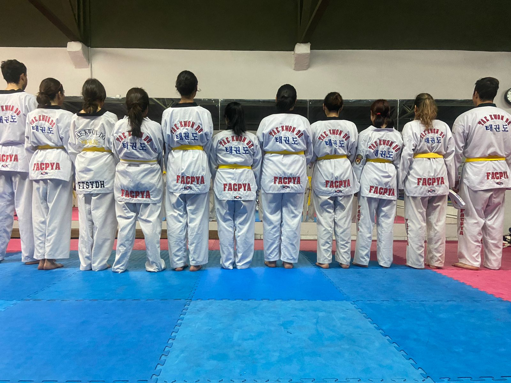
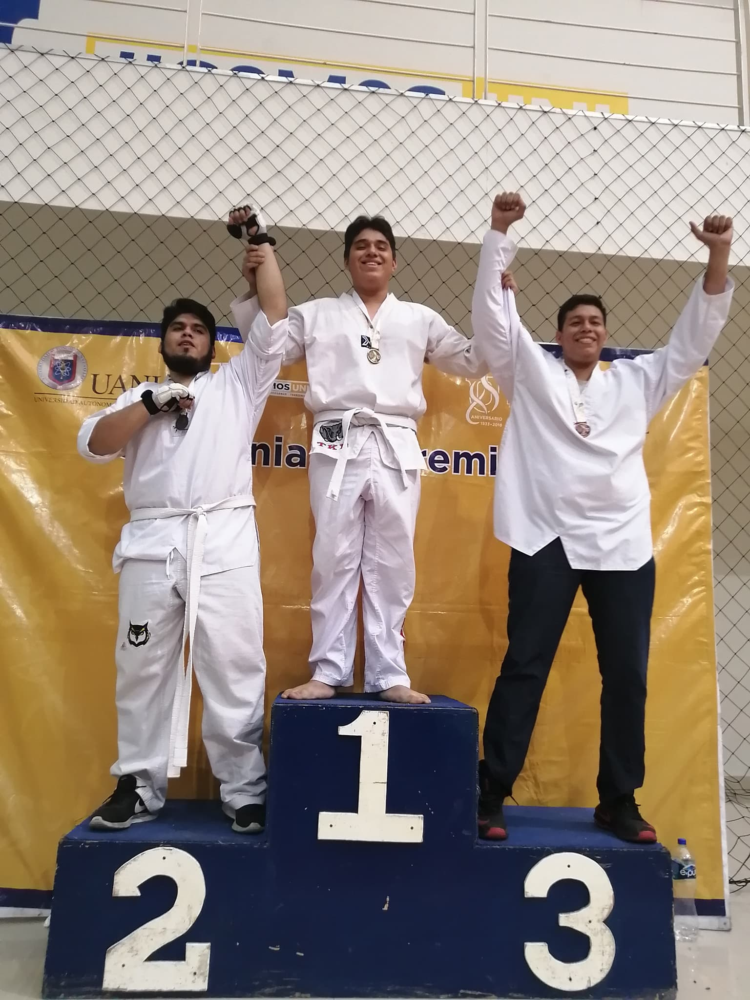

Practico taekwondo desde primer semestre fui el campeon de mi categeoria heavy, desde ese entonces me gusto mucho el taekwondo
Taekwondo es un término que procede del coreano y que hace referencia a un arte marcial del mismo origen. Este deporte combina técnicas del kung fu, el karate-do y otras disciplinas más antiguas.
 Estado entrenando calistenia que consite hacer ejercicio con tu propio peso , meidante barras , largatijas,sentadilla,etc.